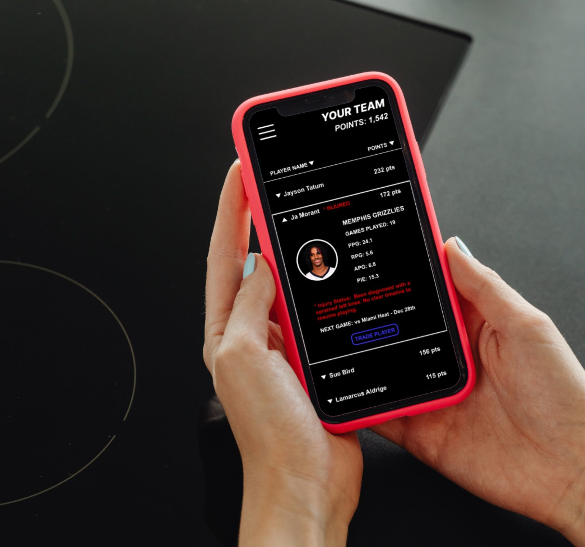
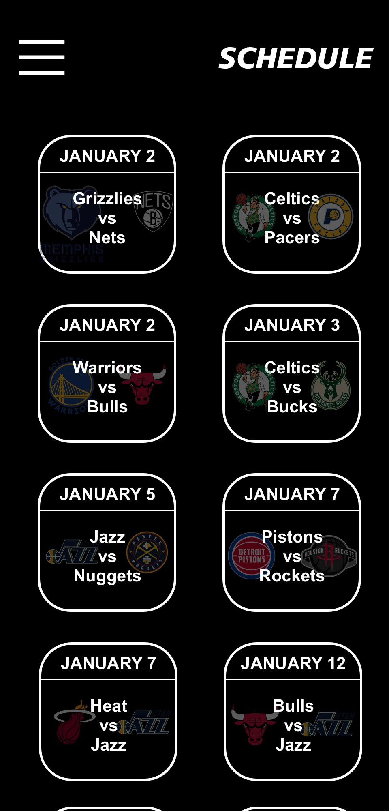
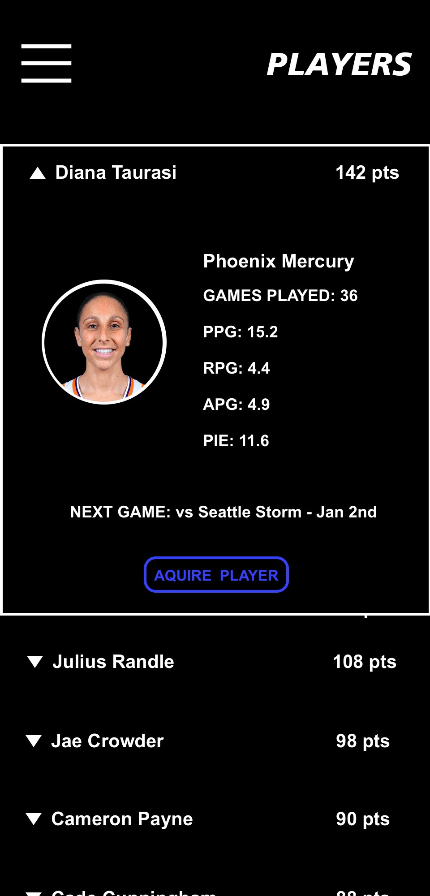
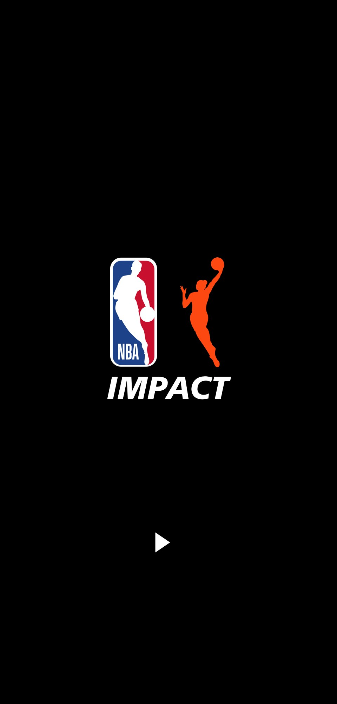

One roster, both leagues.
A brand campaign about players who go unrecognised, delivered as a fantasy basketball app that puts NBA and WNBA players on the same roster.
- Role
- Campaign concept, product design, UX and UI
- Year
- 2022
- Scope
- Brand campaign, mobile app, identity
- Status
- Coursework


The brief
This was a brand campaign built in a class called Adaptive Media, around the NBA and WNBA. The brief was a choose your own adventure, and the topic I chose was players in the NBA and WNBA who do not get a lot of recognition.
The campaign's answer is a mobile app, called Impact. It works like a fantasy sports app or Athletes Unlimited: you build your own team of players and earn points depending on how well the players on your team actually do.
Why I made it
I play fantasy basketball and I do not like the app. So I decided to make my own version of what I think it should be, combining the things I like about fantasy, the things I like about Athletes Unlimited, and things I came up with myself.
The biggest of those, and the one I was most excited about, is WNBA players. In Impact you add NBA and WNBA players to the same roster. That is the whole point: if the topic is players who do not get enough recognition, the product has to actually do something about it rather than just say it.
Naming the points
The points a player earns are called Impact Points. The name comes from a real stat every player already has, PIE, which stands for Player Impact Estimate.
Calling them Impact Points fit perfectly, because the players on your roster are making an impact on your personal score. The app is named Impact for the same reason.
The screens
The home page opens on news about the players on your team, each item showing whether they gained Impact Points, lost them, or made no difference. Underneath that is the schedule of upcoming games, with the key players in each game who are on your roster.
Your profile carries your total points, your highest scorer and your lowest scorer, which is a more honest summary of a fantasy team than a single number. Your Team opens the full roster, sortable by name or by points, where tapping a player expands their photo, team, games played, per game averages, PIE, injury status and next game.
The Players page is the whole league, NBA and WNBA in one list. If your roster has open spaces you can acquire anyone from it, which gives you the freedom to build the lineup you actually want.
Trading
I wanted the trade system easy to understand and easy to use. You open a player from your roster, tap Trade Player, and get a list of everyone available with their Impact Points.
Tapping a name opens the same profile card you already know from your own roster, so nothing new has to be learned. Select turns green to confirm the choice, Done at the top completes the swap, and the roster updates with the new player in and the old one out.
How it turned out
I am happy with how this app turned out. People who follow the NBA and WNBA would appreciate the combination of the two leagues in a version of fantasy basketball that does not exist elsewhere.
It works as the campaign's product because the idea is not stated anywhere, it is built in. A campaign about players who go unrecognised that only talked about recognition would not do much. This one puts those players on the same roster as everyone else, scores them by the same measure, and makes the audience choose them on purpose.
The full write-up is on Medium: Impact App.


Next project
Apple TV enhancement